The Atlantis Hub Transportation display help travelers experienece the San Juan Islands.
Background
The San Juan Islands needed a new display to help travelers find their way on ferries, trains, and planes.
Our goal was to create a clear, efficient, and interactive data-driven environmental display to be placed in a public transportation location, Atlantis Hub. The display should take into account the needs of the users, while also allowing stakeholders to promote the PTF pass, which gives users the ability to take planes, trains, and ferries at a reduced cost.
Large environmental displays engage members of the community and must be highly readable and easily understood. These displays must organize the data into valuable meaning to the user.
From Ryan Stone on Unsplash
Data Modelling
We began by dissecting the existing hub’s data elements into tables and charts. Before even thinking about potential designs, we wanted to ensure we understood all of the data.
 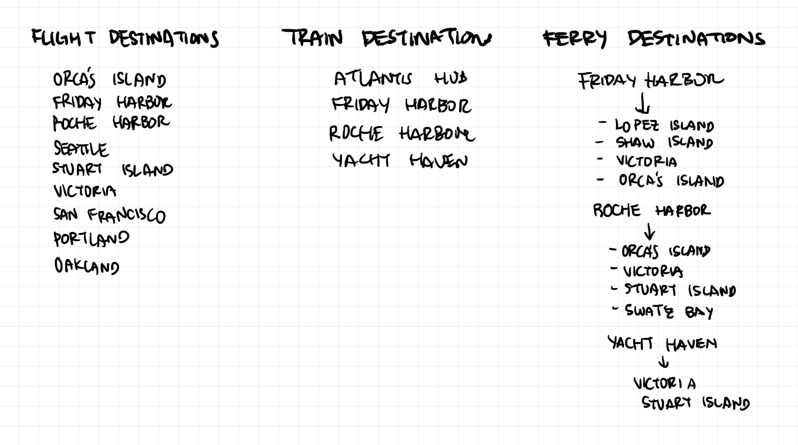
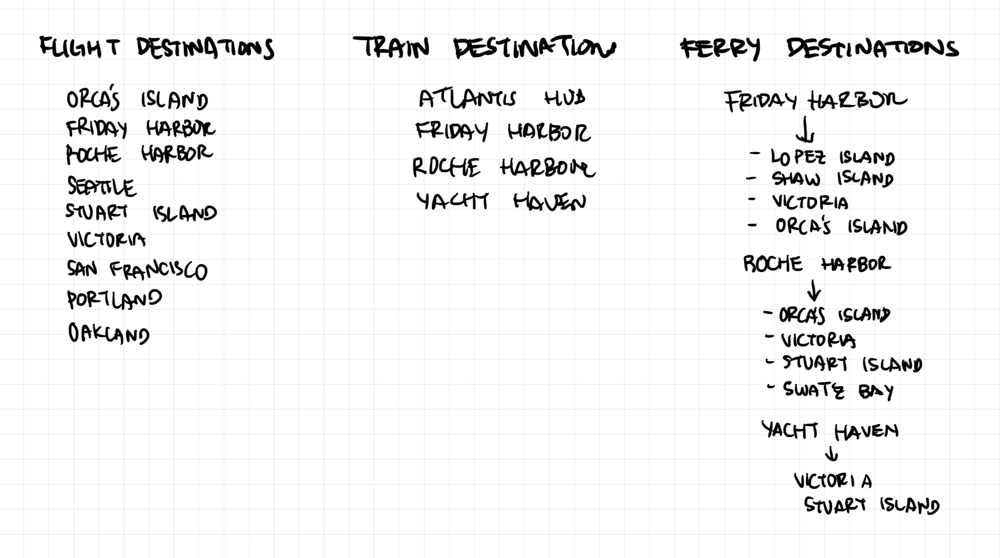
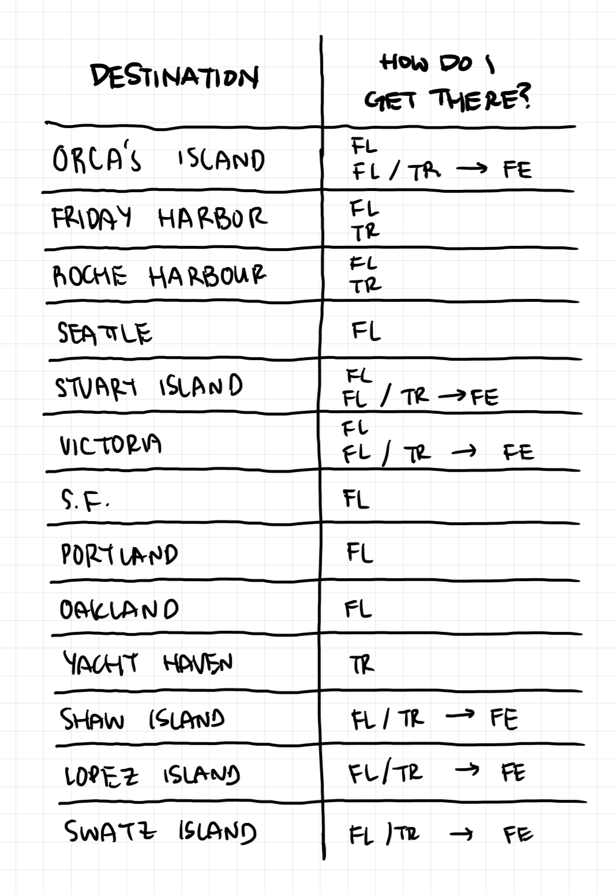
Our Stakeholders
We considered 3 reprensentitives of stakeholders. They take form of Elizabeth, a CEO of the hub who wants to promote a special plane-train-ferry pass (PTF pass), as well as make sure the display is readable. George wants to provide easy access to his island home for his children. Patrick often travels to the islands for business, and is concerned about last minute changes.
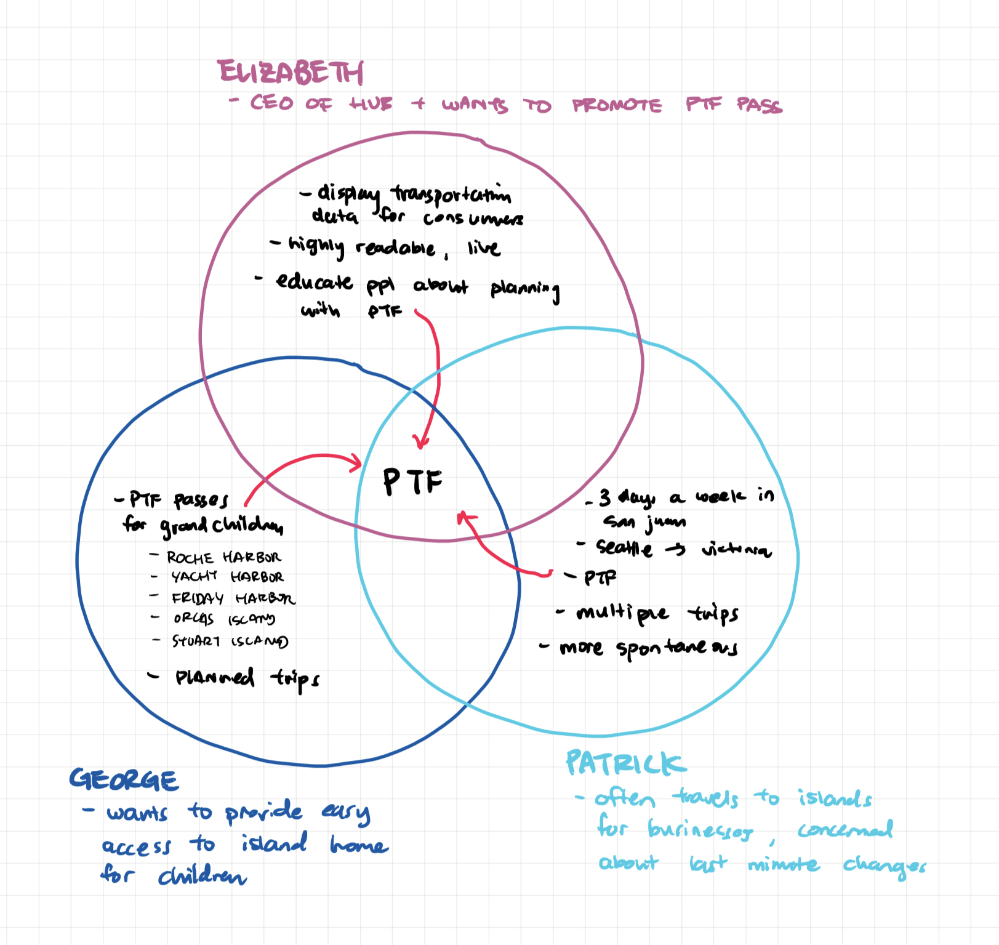
Our Users
From our stakeholders, our users can be grouped into business people, local residents, and vacationers. Each user serves as a “shopper” to the San Juan Islands. They require an engaging and interesting display to give them easily understandable information to make decisions about their travel plans.
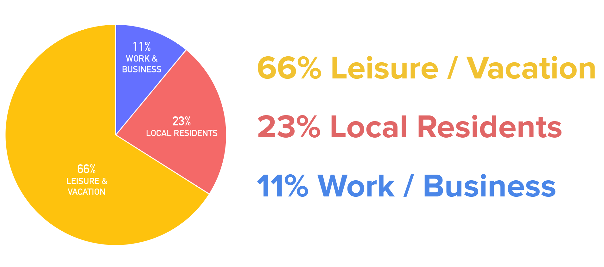
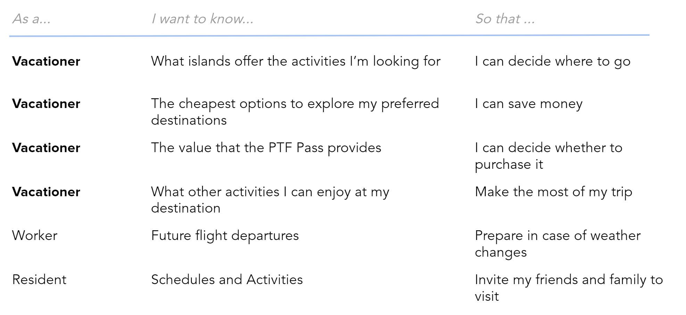
Visual drafts
From our stakeholders, our users can be grouped into business people, local residents, and vacationers. Each user serves as a “shopper” to the San Juan Islands. They require an engaging and interesting display to give them easily understandable information to make decisions about their travel plans.
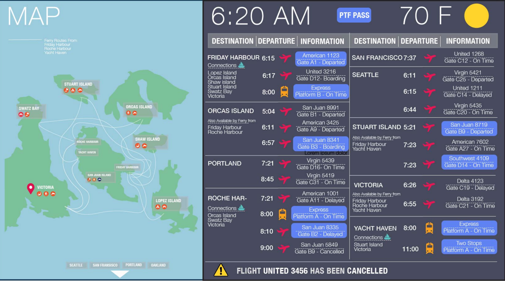
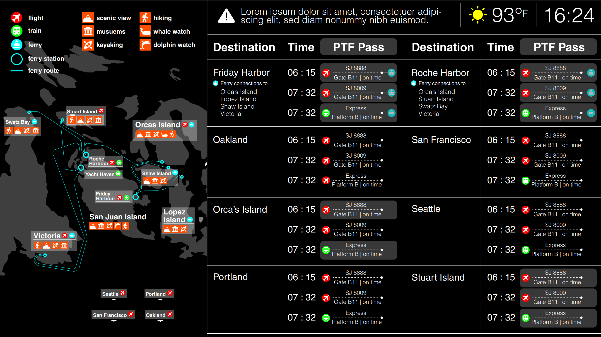
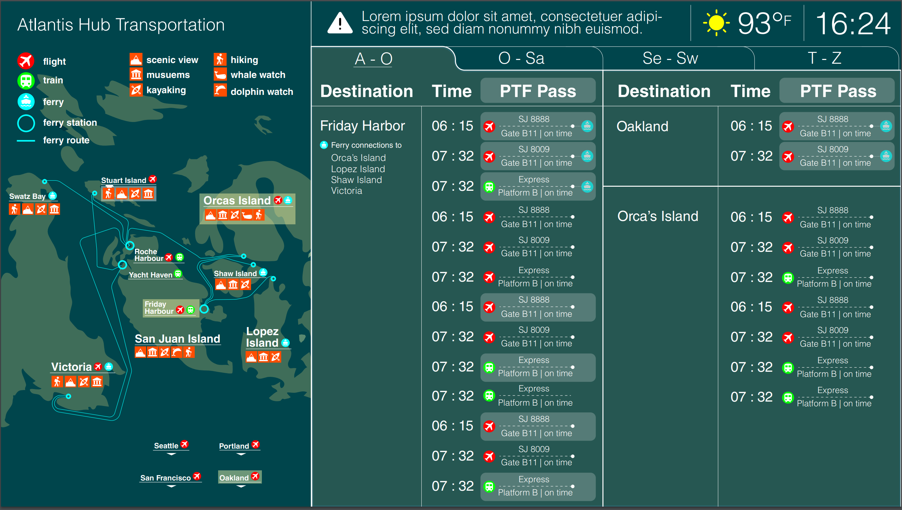
Narrowing down
Visual identity
After exploring multiple options, we found a language comprised of color, iconography, and typography to express San Juan Island’s fun and friendly identity. To promote the PTF pass, we needed to encourage travelers to visit many islands. Following our 'shopper' idea, we decided to include the different experiences travelers could have on each island to encourage more diverse, multi-island visits.
We focused on...
1 Specific activities and experiences at each island
2 How to get to each island highlighted
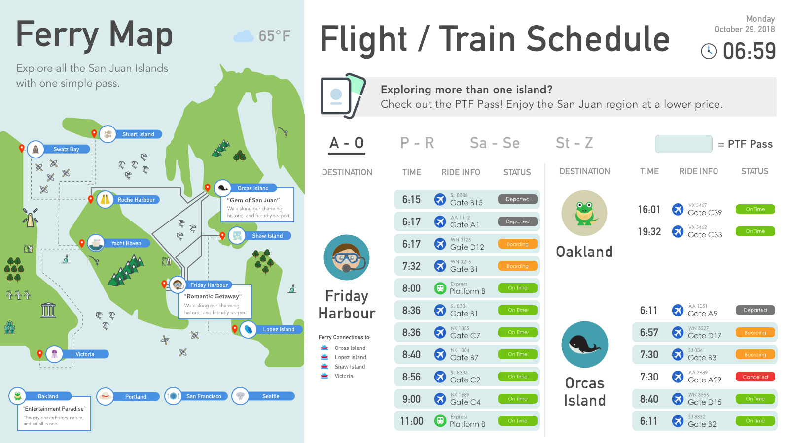
Interactivity
A small control extends the user journey from the large display. It is designed to visually connect to the large display. This closeup is aimed to personalize the user experience by giving more details about selected destinations.
A tap on each destination expresses interest, and is translated into a firework shooting from the island on the big screen. People who are looking at the larger screen might be curious and want to interact with the small screen. The casual shopper can also understand which destinations are more popular, influencing the choices for their own trip.
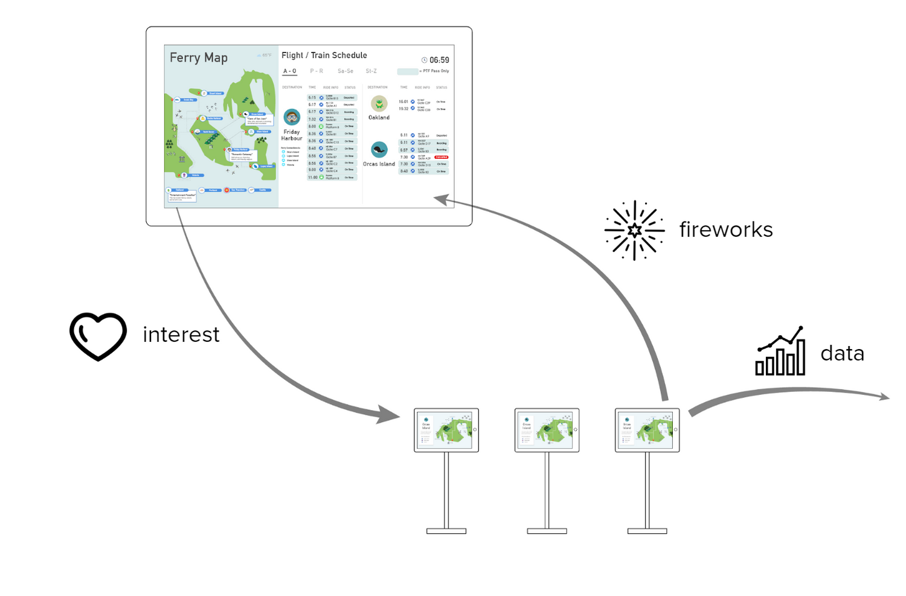
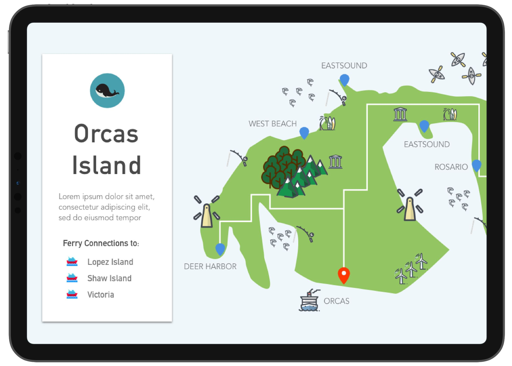
A tap on Orcas Island takes the user to this page, where attractions and PTF opportunities are displayed.